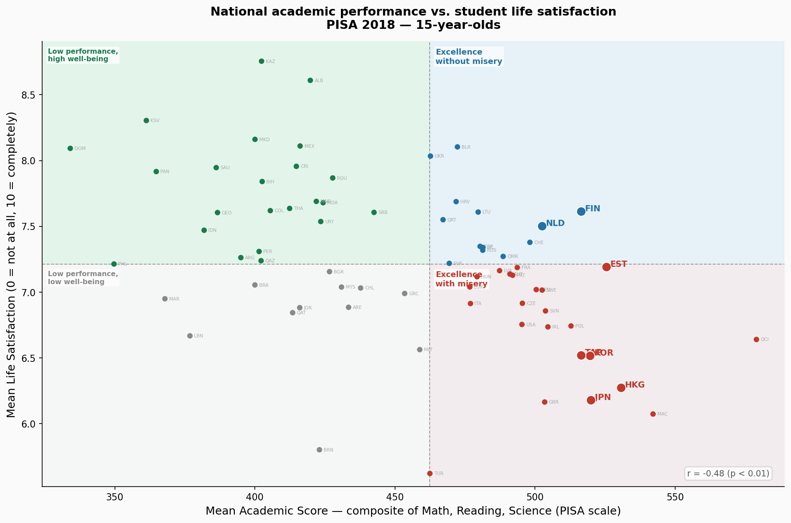
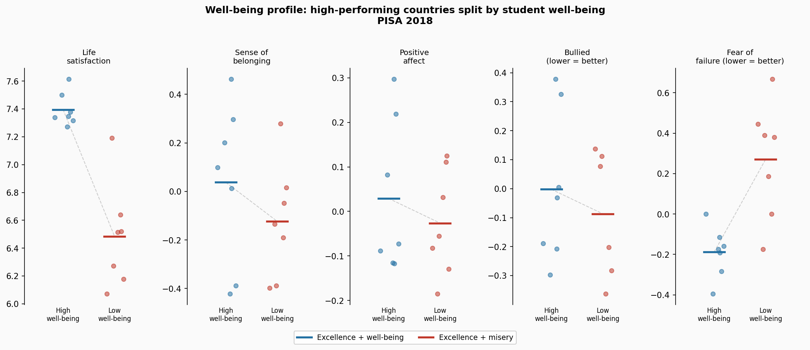
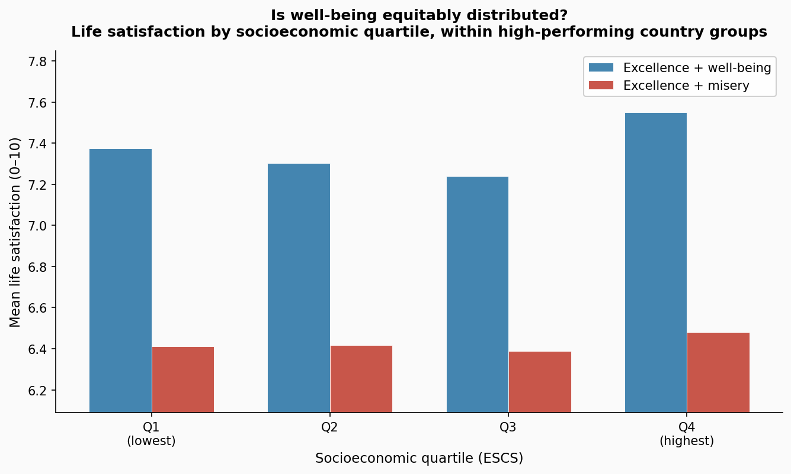

High academic performance and student well-being tend to pull in opposite directions — but not always. A small group of education systems manages to achieve both. The difference may lie less in how much pressure a system applies, and more in the kind of pressure.
Ask whether high-performing education systems make students miserable, and you might expect a reassuring answer. The data is less flattering.
Across 71 countries in PISA 2018, the correlation between a country's mean academic score and its students' mean life satisfaction is −0.48. Negative. Moderate. Statistically robust. Countries where students score higher tend, on average, to be countries where students report lower life satisfaction.
This is the starting point — and it matters. It means the question is not "does a tradeoff exist?" but "does it have to?"
Placing each country on a map with academic performance on one axis and student life satisfaction on the other reveals four distinct regions. The median of each axis divides them.

Each dot is one country. Dashed lines mark the sample medians. Highlighted countries are named.
✦ Excellence without misery
Finland, Netherlands, Switzerland, Iceland, Spain, Lithuania — and others. High scores, high satisfaction.
Excellence with misery
B-S-J-Z China, Macao, Hong Kong, Japan, Korea, Taiwan, Estonia, Poland, Ireland — and others. High scores, below-median satisfaction.
Lower performance, high well-being
Many Latin American and Southeast Asian countries. Students report high satisfaction despite modest academic results.
Lower performance, lower well-being
A minority of lower-income countries face both challenges simultaneously.
The "excellence with misery" quadrant is the most populated among high performers — 23 countries compared to 13. The tradeoff is the norm. But the 13 in the top-left tell a different story.
Finland and Japan are, by academic measures, nearly identical education systems. In PISA 2018 mathematics, reading, and science combined, Japan scores 520 and Finland scores 516 — a difference smaller than the margin of error. They are peers.
Their students are not.
| Country | Composite score | Life satisfaction | Sense of belonging | Fear of failure (WLE) |
|---|---|---|---|---|
| FIN | 516 | 7.61 / 10 | +0.01 | −0.19 |
| JPN | 520 | 6.18 / 10 | +0.02 | +0.38 |
| KOR | 520 | 6.52 / 10 | +0.28 | +0.19 |
| TAP | 516 | 6.52 / 10 | −0.05 | +0.67 |
Finnish and Japanese students study similar content, sit similar assessments, and produce near-identical results. But Finnish students report a life satisfaction score 1.4 points higher — on a 10-point scale, that is substantial. Japanese students report fear of failure nearly 0.6 standard deviations above the global mean. Finnish students report it 0.2 standard deviations below.
Korea and Taiwan amplify the pattern. Taiwan's fear-of-failure index — 0.67 standard deviations above the global mean — is the highest of any high-scoring country. Its students score 516, identical to Finland's. They report life satisfaction of 6.52.
Life satisfaction is one measure of well-being. PISA 2018 also tracks sense of belonging, experience of bullying, positive affect, and fear of failure. How do the two groups of high-performing countries compare across all of these?

Top high-performing countries in each quadrant, compared across five well-being dimensions. Lines connect the group means.
The pattern is consistent but not uniform. Belonging and bullying experience differ relatively little between the two high-performing groups. Life satisfaction and positive affect diverge more clearly. Fear of failure shows the sharpest and most consistent gap — across all dimensions measured, it is the one most tightly linked to which quadrant a high-performing country occupies.
This is consistent with what education researchers have documented about the systems involved: Finland's pedagogy deliberately de-emphasises ranking and competition; East Asian systems, though varied, tend to apply intense pressure through examination systems that carry high stakes for students' futures.
It does not prove causation. But it is the fingerprint of the difference.
A well-being advantage that only benefits privileged students would be a partial one. What happens when we look at well-being by socioeconomic quartile within each group?

ESCS quartile Q1 = lowest socioeconomic background; Q4 = highest. Country groups defined by performance quadrant.
In "excellence without misery" systems, the gap between the bottom and top socioeconomic quartiles is narrower. Students from disadvantaged backgrounds in Finland, the Netherlands, Switzerland, and similar countries report life satisfaction close to their more affluent peers. In "excellence with misery" systems, the gradient is steeper — low-SES students bear a larger share of the well-being deficit.
High academic performance and equitable well-being are not in tension in these systems. If anything, they appear to come together.
The pattern here is descriptive, not causal. This analysis cannot determine whether reducing competitive pressure would raise both achievement and satisfaction, or whether Finland's history, culture, and school structure produce these outcomes through mechanisms that simply cannot be imported. Cross-national comparisons are notoriously poor instruments for policy prescriptions.
What the data can say is narrower but still important: the belief that serious academic performance requires student suffering is not a universal law. It is a description of many systems, not all of them. A small group of countries — consistently, across multiple well-being dimensions — shows that high achievement and student well-being can coexist.
That possibility is, at minimum, worth taking seriously.
| Country | Score ↕ | Life sat. ↕ | Fear fail ↕ | Belonging ↕ | Quadrant |
|---|
Performance: Weighted country mean of Math + Reading + Science composite (mean of 10 PVs per domain per student, then averaged across domains). Country means from averaged PVs are numerically equivalent to Rubin's rules for this purpose.
Well-being (primary): Weighted country mean of ST016Q01NA — single-item life satisfaction 0–10.
Well-being (dimensions): OECD WLE indices: BELONG (belonging), SWBP (positive affect), BEINGBULLIED (inverted), GFOFAIL (inverted). Z-standardized across countries.
Quadrant thresholds: Sample medians on both axes. No fixed cutoffs.
Weights: Student final weight W_FSTUWT throughout.
Limitations: Ecological correlation — country means do not describe individual students. Cultural response bias may affect East-West comparisons on subjective well-being scales. 15-year-olds only. Cross-section; no causal inference. Sub-national PISA units (QCI, QMR, QRT, MAC, HKG) are included in the scatter but excluded from narrative comparisons. Point estimates only.
Source: OECD PISA 2018 student questionnaire. Full analysis: stories/accepted/excellence-without-misery/analysis.py.